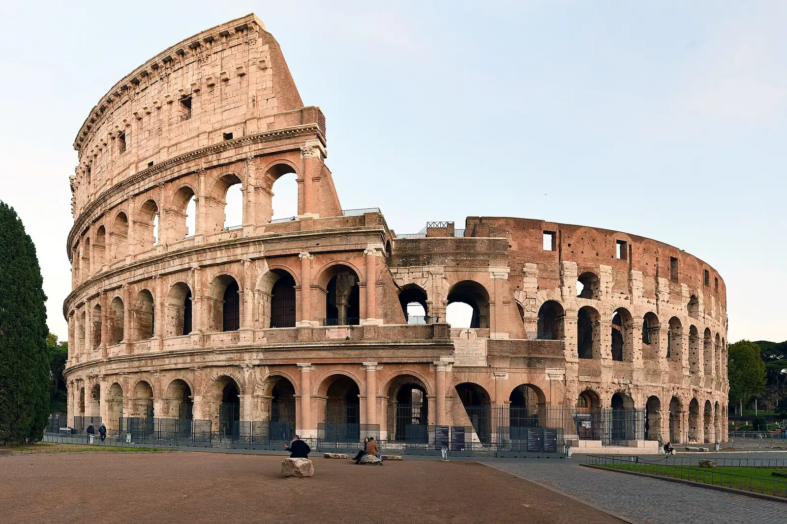

Itinerari su misura a Roma
Non visitare Roma. Vivila.
Sei domande, un minuto. Scegliamo i luoghi giusti per te e li uniamo in giornate che hanno senso sulla mappa: non un elenco di monumenti, ma la tua Roma.
Parti da qui
Quanto tempo hai?
Otto modi di vivere Roma
Quale Roma vuoi incontrare?
Tocca una categoria: la aggiungiamo ai tuoi interessi e apriamo il quiz.
Anteprima
Un itinerario vero
Salvati su questo dispositivo
I miei viaggi
Il tuo primo viaggio ti aspetta
Rispondi al quiz e salva l'itinerario: lo ritroverai qui, con la sua copertina, pronto da riaprire anche durante la visita.
Crea il tuo primo viaggioGli itinerari restano in questo browser, su questo dispositivo: non sono sincronizzati con altri dispositivi e possono andare persi se cancelli i dati di navigazione. Per conservarli altrove, usa «Condividi» o la stampa in PDF.
Nessun viaggio sulla mappa
Crea un viaggio o aprine uno salvato: qui vedrai le sue tappe, giorno per giorno.
Crea il tuo viaggioVIVI Roma
Impostazioni
Preferenze
Aiuto
Informazioni
Privacy e dati
- I viaggi salvati restano in questo browser, su questo dispositivo: nessun account e nessuna sincronizzazione.
- Se ci scrivi, il tuo indirizzo email e il messaggio servono solo a risponderti e a correggere la guida.
© VIVI Roma. Mappa: Protomaps, dati © contributori di OpenStreetMap. Fotografie da Wikimedia Commons, con licenze libere che ne consentono il riuso: autori e licenze nei crediti fotografici.
Prezzi e orari con fonte e data di verifica possono cambiare nel tempo; quelli senza fonte non sono verificati. Controlla sempre i siti ufficiali prima di partire.
Il tuo viaggio
La tua Roma, a modo tuo
VIVI Roma · Non visitare Roma. Vivila.
Da sapere